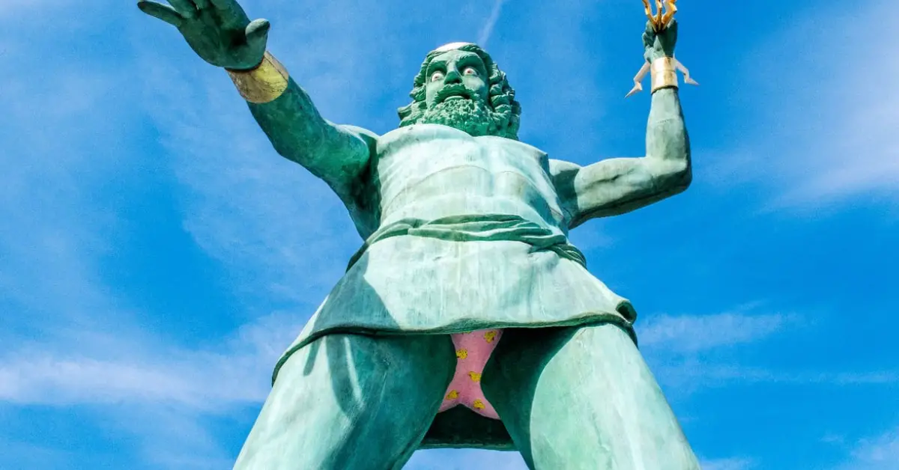

Tonnerre 2 Zeus a ouvert ses portes au public en 1997 sous le nom de "Tonnerre de Zeus". Conçu par les
ingénieurs Dennis McNulty et Larry Bill, et construit par Custom Coasters
International, il est devenu le
deuxième parcours de montagnes russes en bois en France, huit ans après l'Anaconda de Walygator Parc.
En 2022, une étape cruciale a marqué son histoire avec un retracking réalisé par The Gravity Group, donnant
naissance à la nouvelle version de l'attraction sobrement intitulée "Tonnerre 2 Zeus".
Au-delà de ses prouesses techniques, Tonnerre 2 Zeus est également célèbre pour sa statue imposante de Zeus, qui trône à l'entrée de l'attraction, enjambant la file d'attente. En passant sous la statue, les visiteurs découvrent avec étonnement que le dieu grec porte un caleçon à motifs. À l'heure actuelle, ces motifs sont des canards jaunes dispersés sur un fond rose, ajoutant une touche insolite et amusante à l'expérience globale de Tonnerre 2 Zeus.
 Haut de la page Acceuil
Acceuil